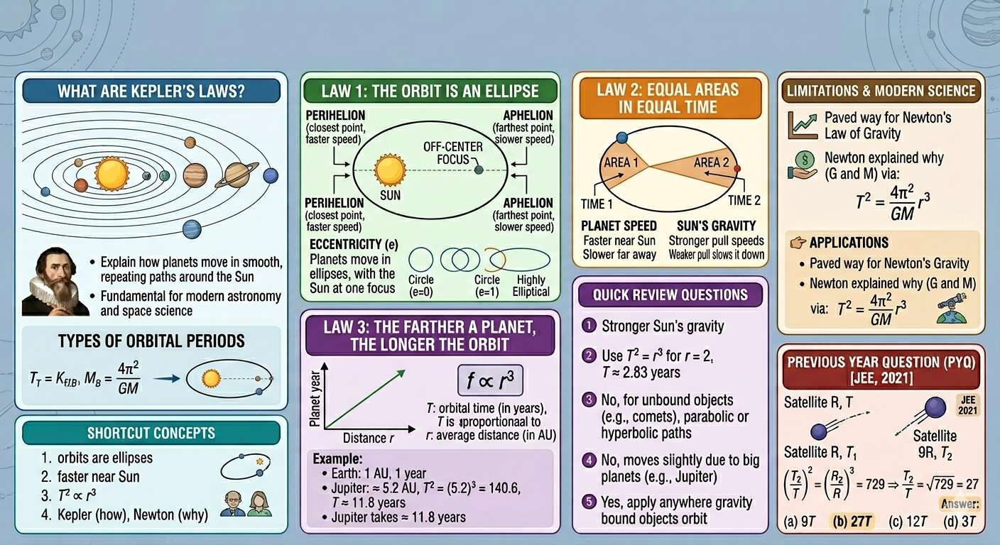

Kepler's Laws of Planetary Motion

Image generated by Google AI
Have you ever gazed up at the night sky and wondered how planets “know” where to go? Why do they seem to glide along smooth, predictable paths around the Sun? Long before rockets or space probes, a brilliant astronomer named Johannes Kepler uncovered some of the key clues to this cosmic choreography.
Kepler’s Laws of Planetary Motion don’t just belong in history books, they are still the foundation of modern astronomy and space science. From plotting satellite orbits to sending probes to distant planets, Kepler’s insights remain indispensable.
Kepler's First Law: The Orbit is an Ellipse
The first remarkable thing Kepler discovered is that planets don’t move in perfect circles around the Sun. Instead, their orbits are ellipses, a shape that looks like a slightly stretched-out circle. And here is the twist: the Sun is not at the center of this ellipse; it sits at one of two special points called foci. This tiny offset makes all the difference in planetary motion.
Imagine squishing a circle from two opposite sides. The amount it is squashed is called its eccentricity \( (e) \). If \( e = 0 \), You have a perfect circle. As the eccentricity increases, the ellipse gets more elongated. So when you hear that Mercury’s orbit has an eccentricity of 0.205, it is actually quite a bit more stretched than Earth’s almost circular orbit.
Because of this elliptical shape, a planet doesn’t stay the same distance from the Sun all the time. The closest point in its orbit is called perihelion, and the farthest point is aphelion. The variation in distance also subtly affects the planet’s speed and the intensity of sunlight it receives, something that even influences seasons on planets!
Kepler's Second Law: Planets Sweep Equal Areas in Equal Time
Kepler noticed something truly elegant about planetary motion. Imagine drawing an imaginary line from a planet to the Sun. As the planet moves along its orbit, this line sweeps out areas in space. Kepler found that the area swept out in a given amount of time is always the same, no matter where the planet is in its orbit.
What does this mean in simple terms? Planets speed up when they are closer to the Sun and slow down when they are farther away. This isn’t magic, it’s gravity doing its work. The closer a planet is, the stronger the Sun’s gravitational pull, so the planet accelerates. Farther away, the pull weakens, and the planet leisurely drifts along.
This also explains why the length of seasons on Earth isn’t perfectly equal. For instance, our Northern Hemisphere’s winter is slightly shorter than summer, due to Earth moving a bit faster when closer to the Sun.
Kepler's Third Law: The Farther a Planet, the Longer the Orbit
The third law connects a planet’s distance from the Sun to the length of its “year.” In essence, the farther a planet is from the Sun, the longer it takes to complete one orbit.
Mathematically, the law says:
Where:
- \( T \) = orbital period (in Earth years)
- \( r \) = average distance from the Sun (in astronomical units, AU)
Let us see it in action. Earth is 1 AU from the Sun and takes 1 year to orbit. Jupiter, on the other hand, is about 5.2 AU away. Plugging in:
And indeed, Jupiter takes nearly 12 Earth years to make one trip around the Sun. Simple, elegant, and powerful.
You might wonder: why does this still matter today? Every spacecraft mission—whether sending satellites to orbit Earth or probes to Mars and beyond—relies on Kepler’s laws to calculate orbits, speeds, and travel times. Even the International Space Station moves according to these same principles.
Kepler’s work also set the stage for Isaac Newton’s law of universal gravitation. While Kepler described how planets move, Newton explained why: the gravitational force between the Sun and planets holds everything together.
Combining Kepler’s Third Law with Newton’s Law of Gravitation gives us an even more general formula:
Where:
- \( G \) = gravitational constant
- \( M \) = mass of the central object (like the Sun)
This formula is universal. It can predict the orbits of moons, artificial satellites, or even exoplanets orbiting distant stars. It’s amazing how a law derived from careful observations of Mars centuries ago applies to the vast cosmos today.
Some Fun Facts
- Halley’s Comet travels in a highly elongated ellipse. It swings close to the Sun, then rockets out far into the depths of space, yet its motion perfectly follows Kepler’s Laws.
- Kepler derived these laws painstakingly by analyzing Tycho Brahe’s meticulous observations of Mars, long before calculators or computers existed.
- The word "planet" comes from the Greek word for "wanderer," because planets seemed to drift unpredictably across the night sky. Kepler was the one who decoded their wandering paths.
Quick Review Questions
-
Why does a planet move faster when it is near the Sun?
Because the Sun’s gravity is stronger at closer distances, pulling the planet more and accelerating it along its orbit. -
If a planet is twice as far from the Sun as Earth, how long is its year?
Using \( T^2 = r^3 \), for \( r = 2 \): \( T^2 = 8 \Rightarrow T \approx 2.83 \) years. -
Are all orbits ellipses?
Objects bound by gravity follow elliptical orbits. However, objects not bound, like some comets, can trace parabolic or hyperbolic paths. -
Does the Sun stay still?
Not exactly. The Sun moves slightly due to the gravitational pull of massive planets like Jupiter. -
Do Kepler’s Laws work outside our solar system?
Absolutely! Anywhere one body orbits another due to gravity, these laws hold true.
Shortcut Concepts
- Planet orbits are ellipses, not perfect circles.
- Planets move faster when closer to the Sun.
- Farther planets take longer to orbit: \( T^2 \propto r^3 \).
- Kepler described the motion; Newton explained the underlying gravitational force.
Previous Year Question (PYQ)
Q.1
A satellite orbits in a circle of radius \( R \), and takes time \( T \). Another satellite orbits in a circle of radius \( 9R \). What is its time period?
[JEE 2021]
- \( 9T \)
- \( 27T \)
- \( 12T \)
- \( 3T \)
Solution:
Using Kepler’s Third Law:
Let the second satellite’s time be \( T_2 \), with radius \( R_2 = 9R \):
Answer: \( \boxed{27T} \)